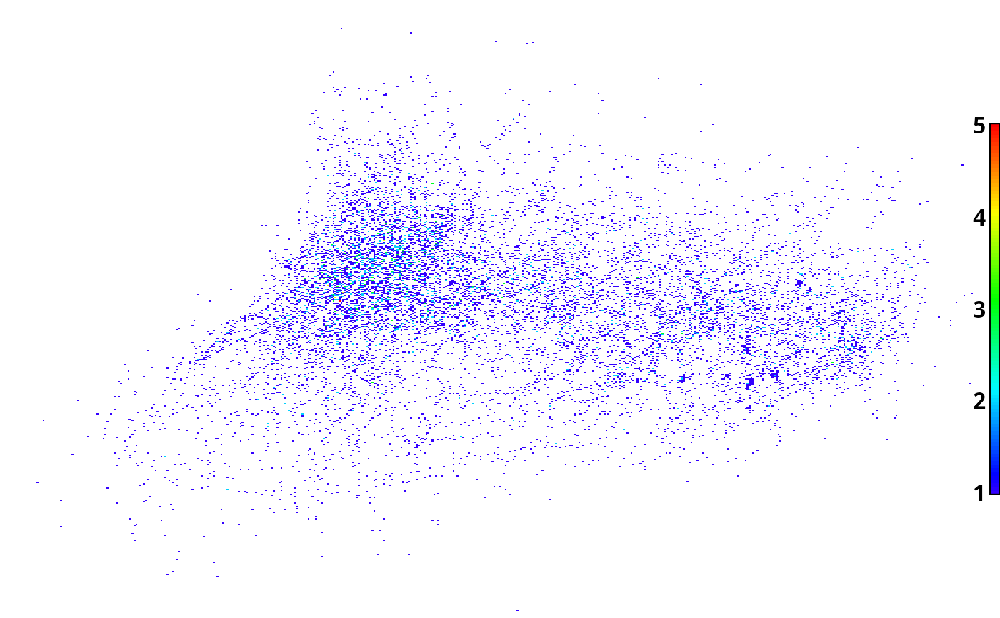

Create heat maps to display the spatial distribution of acoustic telemetry positions. Most useful when used on data with high spatial resultion, such as VPS positional telemetry data.
position_heat_map(
positions,
projection = "LL",
fish_pos_int = "fish",
abs_or_rel = "absolute",
resolution = 10,
interval = NULL,
x_limits = NULL,
y_limits = NULL,
utm_zone = NULL,
hemisphere = "N",
legend_gradient = "y",
legend_pos = c(0.99, 0.2, 1, 0.8),
output = "plot",
folder = "position_heat_map",
out_file = NULL
)A dataframe containing detection data with at least the following 4 columns:
DETECTEDIDIndividual animal identifier; character.
DATETIMEDate-time stamps for the positions (MUST be of class 'POSIXct')
LATPosition latitude.
LONPosition longitude.
A character string indicating if the coordinates in the
'positions' dataframe are geographic (projection = "LL") or
projected/Cartesian(projection = "UTM"). Used to convert coordinates
between latitude/longitude in decimal degrees ("LL"; e.g., 45.98753) and
UTM. Valid arguments are "LL" (latitude/longitude) and "UTM". If
projection=="UTM", then utm_zone and 'hemisphere arguments
must also be supplied.
A character string indicating whether output will display number of fish or number of positions occuring in each cell of the grid. Valid arguments are c("fish", "positions", "intervals"). Default is "fish". If fish_pos_interval == "intervals", then argument "interval" must be supplied.
A character string indicating whether output will display values as absolute value (i.e, the actual number of fish, positions, or intervals) or as relative number (relative to total number of fish detected). Valid arguments are c("absolute", "relative"). Default is "absolute".
A numeric value indicating the spatial resolution (in meters) of the grid system used to make the heat maps. Default is 10 m.
A numeric value indicating the duration (in seconds) of time bin (in seconds) for use in calculating number of intervals fish were resident in a grid cell (i.e., a surrogate for amount of time spent in each cell of the grid). If interval==NULL (default), than raw number of positions is calculated. This value is only used when fish_pos_int == "intervals'.
An optional 2-element numeric containing limits of x axis. If x_limits == NULL (default), then it is determined from the extents of the data.
An optional 2-element numeric containing limits of y axis. If y_limits == NULL (default), then it is determined from the extents of the data.
An interger value between 1 and 60 (inclusive) indicating the primary UTM zone of the detection data. Required and used only when projection == "UTM". Default is NULL (i.e. assumes detection data are in projection == LL by default).
A character string indicating whether detection data are in the northern or southern hemisphere. Required and used only when projection == "UTM". Valid values are c("N", "S"). Default is "N".
A character string indicating the orientation of the color legend; "y" = vertical, "x" = horizontal, "n" indicates that no legend should be drawn. Default is "y".
A numeric vector indicating the location of the color legend as a portion of the total plot area (i.e., between 0 and 1). Only used if 'legend_gradient" in not "n". Default is c(0.99, 0.2, 1.0, 0.8), which puts the legend along the right hand side of the plot.
An optional character string indicating how results will be displayed visually. Options include: 1) a plot in the R device window ("plot"), 2) a .png image file ("png"), or 3) a .kmz file ("kmz") for viewing results as an overlay in Google Earth. Accepted values are c("plot", "png", "kmz"). Default value is "plot".
A character string indicating the output folder. If path is not
specified then folder will be created in the working directory.
Default is "position_heat_map".
A character string indicating base name of output files (if
output = "png" or "kmz"). If out_file is a path, all but last
part is ignored (via basename). Any file extension is also ignored
(via tools::file_path_sans_ext).
A list object containing 1) a matrix of the calculated values (i.e., fish, positions, intervals), with row and column names indicating location of each grid in UTM, 2) a character string specifying the UTM zone of the data in the matrix, 3) the bounding box of the data in UTM, 4) and the bounding box of the data in latitude (Y) and longitude (X), 5) a character string displaying the function call (i.e., a record of the arguments passed to the function).
In addition, the user specifies an image output for displaying the heat map. Options are a "plot" (displayed in R), "png" (png file saved to specified folder), and "kmz" for viewing the png image as an overlay in Google Earth (kmz file saved to specified folder).
When an 'interval' argument is supplied, the number of unique fish x
interval combinations that occurred in each grid cell is calculated instead
of raw number of positions. For example, in 4 hours there are a total of 4
1-h intervals. If fish 'A' was positioned in a single grid cell during 3 of
the 4 intervals, than the number of intervals for that fish and grid
combination is 3. Intervals are determined by applying the
findInterval function (base R) to a sequence of timestamps
(class: POSIXct) created using
seq(from = min(positions[, DATETIME]), to = min(positions[, DATETIME]), by = interval),
where interval is the user-assigned interval duration in seconds. Number of
intervals is a more robust surrogate than number of positions for relative
time spent in each grid in cases where spatial or temporal variability in
positioning probability are likely to significantly bias the distribution of
positions in the array.
Calculated values (i.e., fish, positions, intervals) can be returned as absolute or relative, which is specified using the abs_or_rel argument; "absolute" is the actual value, "relative" is the absolute value divided by the total number of fish appearing in the 'positions' dataframe. Units for plots: fish = number of unique fish (absolute) or \ 'positions' dataframe (relative); positions = number of positions (absolute) or mean number of positions per fish in 'positions' dataframe (relative); intervals = number of unique fish x interval combinations (absolute) or mean number of unique fish x interval combinations per fish in 'positions' dataframe (relative).
data(lamprey_tracks)
phm <- position_heat_map(lamprey_tracks)
